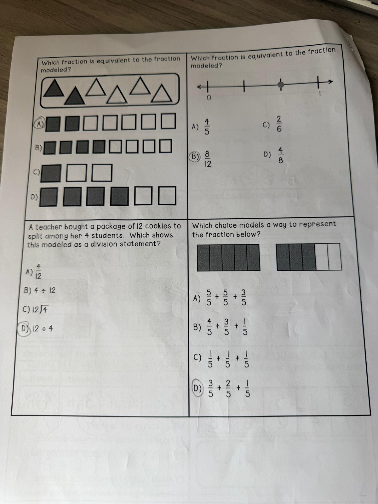

Which fraction is equivalent to the fraction modeled? (five shaded triangles out of eight — look at the picture)
Each row shows a model with some squares shaded.
Which fraction is equivalent to the fraction modeled on the number line? (dot sits about 2/3 of the way from 0 to 1)
A teacher bought a package of 12 cookies to split among her 4 students. Which shows this modeled as a division statement?
Which choice models a way to represent the fraction below? (one whole rectangle shaded + another rectangle with 3 of 5 shaded = 1 3/5)